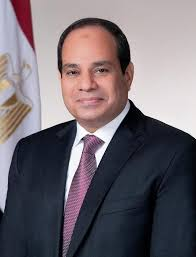
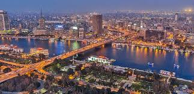

The current population of Egypt in 2024 is 114,484,252, a 1.57% increase from 2023. The population of Egypt in 2023 was 112,716,598, a 1.56% increase from 2022. The population of Egypt in 2022 was 110,990,103, a 1.58% increase from 2021. The population of Egypt in 2021 was 109,262,178, a 1.67% increase from 2020 and from predections of population in Egypt in 2025 is 109 million
he is Abd el-Fattah el-Sisi
he is the president of Egypt from 8 June 2014 and he was born in 19 November 1954
do you want to know more about him go to this link Abd el-Fattah el-Sisi
he was adly mansour who was born on December 23, 1945. and He ran the country during the transitional phase from the 4th of July, 2013, to the 8th of June, 2014.

It is cairo and it's populayion in 2024 is 22,624,000,
they are 29 and this is them
- New Valley Area: 145,369 square miles (376,505 sq km) Capital: Kharga
- Matruh Area: 81,897 square miles (212,112 sq km) Capital: Marsa Matruh
- Red Sea Area: 78,643 square miles (203,685 sq km) Capital: Hurghada
- Giza Area: 32,878 square miles (85,153 sq km) Capital: Giza
- South Sinai Area: 12,795 square miles (33,140 sq km) Capital: el-Tor
- North Sinai Area: 10,646 square miles (27,574 sq km) Capital: Arish
- Suez Area: 6,888 square miles (17,840 sq km) Capital: Suez
- Beheira Area: 3,520 square miles (9,118 sq km) Capital: Damanhur
- Helwan Area: 2,895 square miles (7,500 sq km) Capital: Helwan
- Sharqia Area: 1,614 square miles (4,180 sq km) Capital: Zagazig
- Dakahlia Area: 1,340 square miles (3,471 sq km) Capital: Mansura
- Kafr el-Sheikh Area: 1,327 square miles (3,437 sq km) Capital: Kafr el-Sheikh
- Alexandria Area: 1,034 square miles (2,679 sq km) Capital: Alexandria
- Monufia Area: 982 square miles (2,544 sq km) Capital: Shibin el-Kom
- Minya Area: 873 square miles (2,262 sq km) Capital: Minya
- Gharbia Area: 750 square miles (1,942 sq km) Capital: Tanta
- Faiyum Area: 705 square miles (1,827 sq km) Capital: Faiym
- Qena Area: 693 square miles (1,796 sq km) Capital: Qena
- Asyut Area: 599 square miles (1,553 sq km) Capital: Asyut
- Sohag Area: 597 square miles (1,547 sq km) Capital: Sohag
- Ismailia Area: 557 square miles (1,442 sq km) Capital: Ismailia
- Beni Suef Area: 510 square miles (1,322 sq km) Capital: Beni Suef
- Qalyubia Area: 386 square miles (1,001 sq km) Capital: Banha
- Aswan Area: 262 square miles (679 sq km) Capital: Aswan
- Damietta Area: 227 square miles (589 sq km) Capital: Damietta
- Cairo Area: 175 square miles (453 sq km) Capital: Cairo
- Port Said Area: 28 square miles (72 sq km) Capital: Port Said
- Luxor Area: 21 square miles (55 sq km) Capital: Luxor
- 6th of October Area: Unknown Capital: 6th of October City